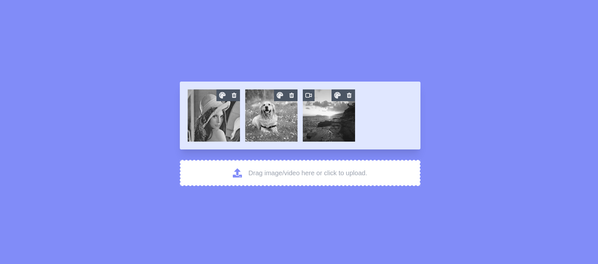
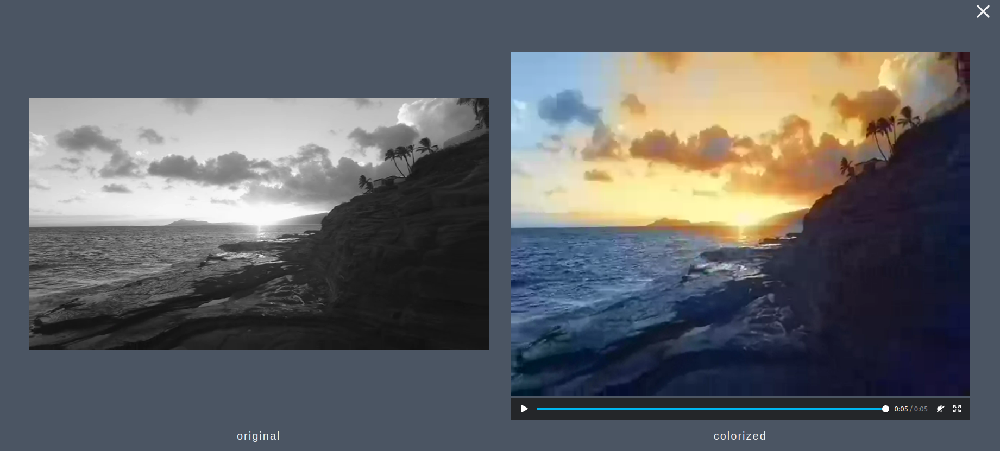

User Documentation¶
Colorize your black-white image(s)
1. When you have opened the web page, you can upload or just “drag and drop” the black-white image(s) you want to colorize.

After you have uploaded the images, there are two buttons on the right upper corner of each image.

The left one is for the colorization function, and the right one is for you to delete the image.
3. Once you click on the delete button, the image will be deleted from the web page. If you want to colorize it, you need to upload or drag it again.

4. If you click on the left button, the colorization process will be called. After a few seconds, you will get a result like below. The left image will be the original one, and the right image will be the colorized one so that you can get a comparison and enjoy it.
5. To continue colorizing more images, you need to click on the right upper corner to close the result window and repeat steps 2 to 4 for the rest of the images. You need to repeat step 1 before if you want to upload some more images.
Colorize your black-white video(s)
1. When you have opened the web page, you can upload or just “drag and drop” the black-white video(s) you want to colorize.
After you have uploaded the videos, there are two buttons on the right upper corner of each video.

The left one is for the colorization function, and the right one is for you to delete the video.
3. Once you click on the delete button, the video will be deleted from the web page. If you want to colorize it, you need to upload or drag it again.
4. If you click on the left button, the colorization process will be called. After a few minutes, you will get a result like below. The left video will be the original one, and the right video will be the colorized one so that you can get a comparison and enjoy it.
5. To continue colorizing more videos, you need to click on the right upper corner to close the result window and repeat steps 2 to 4 for the rest of the videos. You need to repeat step 1 before if you want to upload some more videos.
Important notice
Our currently supported format for images are jpg, png and jpeg. The colorized image will be in the same format as the original one.
Our currently supported format for videos are only mp4. The colorized video will be in format webm.
The following actions could cause some issues, so we recommend you to avoid while enjoying the colorization process:
After click on the colorize buttom, please do not click the delete button before you see the result.
After click on the colorize buttom of one item, please do not click it twice or click the colorize buttom of another item, before you see the result.
It will take approx. 1 sec. to colorize an image, and approx. 5 min to colorize a 4 sec. video, so please be pattioned of the waiting.
We wish you a lot of fun using our product =)
Your Netella Team